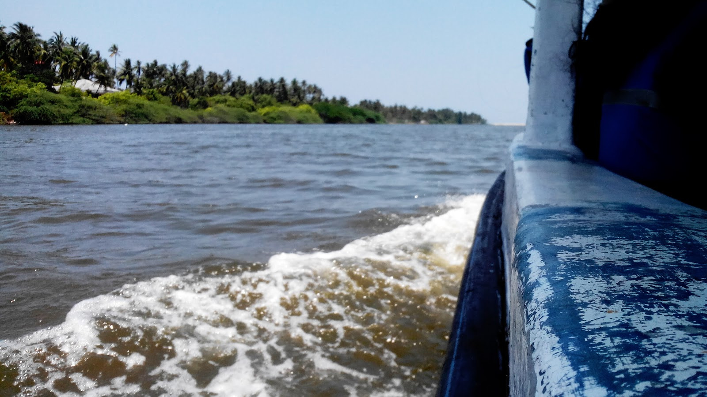

Pondicherry - Last French Colony
LIFE IS SOMETHING WE ALL ARE SCARED OF.
I have been to Pondicherry twice. Once with my friend and band's drummer, Ankit Godle and next time with my friends from Bangalore. Both time from I travelled from Bangalore, once by bus and next time taking a self-driving car.
The first time I visited was in 2016, when I visited Chennai to meet Ankit for a new song composition. On reaching Chennai we thought to visit Pondicherry and so made a spontaneous plan and took a bus to Pondicherry. We only had a day so we took a ferry to Paradise Island.

Ferry to Paradise Island Beach
After spending some nice time we went to rock beach and then returned back to Chennai.
Well this was how I visited it for the first time. The next trip happened was by self-driving. Which was amazing as we followed Google Maps which took us from a bad and longer route. But that's what the amazing thing is, the adventures. We reached Pondicherry by afternoon as we started early and checked in to AirBnb. As we all were tired we spent some time on the beach and then done for the day.
The next day we chilled at few places, the amazing French colony and the rock beach front with so many people enjoying life with their loved ones. Though it was pretty exhausting day with traffic and traveling around the city.
Also, went to an amazing The Motorcycle Diaries cafe later in the evening and then left back for Bengaluru via Chennai. And it was one hell of a road trip.